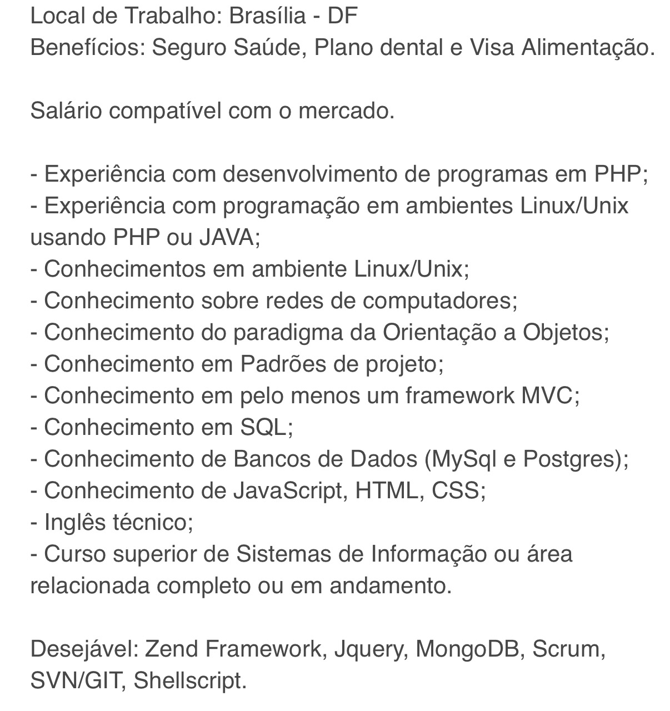

<!DOCTYPE html>
<html>
  <head>
    <meta charset="utf-8">
    <meta name="viewport" content="initial-scale=1, maximum-scale=1, user-scalable=no, width=device-width">
    <title></title>


    <link rel="manifest" href="manifest.json">
    <link href="lib/ionic/css/ionic.css" rel="stylesheet">
    <link href="css/style.css" rel="stylesheet">
    <link href="css/animate.css" rel="stylesheet">
    <script src="lib/ionic/js/ionic.bundle.js"></script>
    <script src="cordova.js"></script>
    <script src="js/app.js"></script>
    <script src="lib/collide/collide.js"></script>
    <link href="http://code.ionicframework.com/ionicons/2.0.1/css/ionicons.min.css">

    <script>
    $(function(){
      $('button.btn_cancelar').on('click',function(){
        $('ion-pane[name=box]').addClass('animated rotateOutUpLeft');
      })
    });

    $(function(){
      $('button.btn_check').on('click',function(){
        $('ion-pane[name=box]').addClass('animated rotateOutUpRight');
      })
    });
    </script>

    <!-- un-comment this code to enable service worker
    <script>
      if ('serviceWorker' in navigator) {
        navigator.serviceWorker.register('service-worker.js')
          .then(() => console.log('service worker installed'))
          .catch(err => console.log('Error', err));
      }
    </script>-->

    <link href="lib/ionic/css/ionic.css" rel="stylesheet">
    <link href="css/style.css" rel="stylesheet">

    <!-- IF using Sass (run gulp sass first), then uncomment below and remove the CSS includes above
    <link href="css/ionic.app.css" rel="stylesheet">
    -->

    <!-- ionic/angularjs js -->
    <script src="lib/ionic/js/ionic.bundle.js"></script>

    <!-- cordova script (this will be a 404 during development) -->
    <script src="cordova.js"></script>

    <!-- your app's js -->
    <script src="js/app2.js"></script>
    <script src="js/controller.js"></script>
  </head>
  <body ng-app="starter">

<ion-nav-bar class="bar-positive">
 <ion-nav-back-button>
 </ion-nav-back-button>
</ion-nav-bar>

<ion-nav-view></ion-nav-view>

<script id="templates/tabs.html" type="text/ng-template">
 <ion-tabs class="tabs-positive tabs-icon-top">

  <!-- Sugestões Tab -->
 <ion-tab title="Sugestões" icon-off="ion-ios-paper" icon-on="ion-ios-paper" href="#/tab/dash">
   <ion-nav-view name="tab-dash"></ion-nav-view>
 </ion-tab>

 <!-- Chats Tab -->
 <ion-tab title="Chats" icon-off="ion-ios-chatboxes-outline" icon-on="ion-ios-chatboxes" href="#/tab/chats">
    <ion-nav-view name="tab-chats"></ion-nav-view>
  </ion-tab>

 <!-- Account Tab -->
 <ion-tab title="Convites" icon-off="ion-android-mail" icon-on="ion-android-mail" href="#/tab/search">
   <ion-nav-view name="tab-search"></ion-nav-view>
 </ion-tab>

 <ion-tab title="Configurações" icon-off="ion-ios-gear-outline" icon-on="ion-ios-gear" href="#/tab/config">
  <ion-nav-view name="tab-config"></ion-nav-view>
</ion-tab>
 </ion-tabs>
</script>

<script id="templates/tab-dash.html" type="text/ng-template">
 <ion-view title="Sugestões">
   <ion-content class="padding">
     <div class="flip3D fadeInUp">
       <div class="front animated">
         <p>
           <a href="#" class="subdued">Vaga de Emprego</a>
         </p>
         
       </div>

       <div class="back">
        
       </div>
    </div>
       <div class="bar bar-footer bar-light" style="top:510px;">
         <button class="button btn_cancelar button-clear"style="top:-14px;left:60px;">
           
         </button>
       <div class="title">
         <button class="button button-clear" style="top:-4px;">
           
         </button>
       </div>
       <button class="button btn_check button-clear" style="top:-8px;right:60px;">
         
       </button>
     </div>
   </ion-content>
 </ion-view>
</script>

<script id="templates/tab-chats.html" type="text/ng-template">
 <ion-view title="Chats">
   <ion-content class="padding_chat">
         <ion-list show-delete="false" con-wipe="true">
           <div class="bar bar-header item-input-inset busca">
          <label class="item-input-wrapper">
            <i class="icon ion-ios-search placeholder-icon"></i>
            <input type="search" placeholder="Search">
          </label>
          <button class="button button-positive">
            Cancel
          </button>
        </div>

          <ion-item href="#/tab/chatDetail">
              <a class="item item-avatar" href="#/tab/chatDetail">
                  
                  <h2>Magazine Luiza</h2>
                  <p>Back off, man. I'm a scientist.</p>
                     <ion-option-button class="button-balanced" ng-click="share(item)">
                       Arquivar
                     </ion-option-button>
                     <ion-option-button class="button-positive" ng-click="edit(item)">
                       Mais...
                     </ion-option-button>
              </a>
           </ion-item>


            <ion-item href="#/tab/chatDetail">
                <a class="item item-avatar" href="#/tab/chatDetail">
                    
                    <h2>Nova Haus</h2>
                    <p>Back off, man. I'm a scientist.</p>
                       <ion-option-button class="button-balanced" ng-click="share(item)">
                         Arquivar
                       </ion-option-button>
                       <ion-option-button class="button-positive" ng-click="share(item)">
                         Mais...
                       </ion-option-button>
                </a>
             </ion-item>


         <ion-item href="#/tab/chatDetail">
             <a class="item item-avatar" href="#/tab/chatDetail">
                 
                 <h2>Totvs</h2>
                 <p>Back off, man. I'm a scientist.</p>
                    <ion-option-button class="button-balanced" ng-click="share(item)">
                      Arquivar
                    </ion-option-button>
                    <ion-option-button class="button-positive" ng-click="share(item)">
                      Mais...
                    </ion-option-button>
             </a>
          </ion-item>
          </ion-list>


   </ion-content>
 </ion-view>
</script>

<script id="templates/tab-search.html" type="text/ng-template">
 <ion-view title="Convites">
   <ion-content class="padding">
     <div class="list_card">
        <div class="item item-body">
           <a class="subdued">Oportunidade de Emprego</a>
          <h2 class="titulo_">Desenvolvedor FrontEnd</h2>
          
          <p>
            This is a "Facebook" styled Card. The header is created from a Thumbnail List item,
            the content is from a card-body consisting of an image and paragraph text. The footer
            consists of tabs, icons aligned left, within the card-footer.
          </p>
          <p>
            <a href="#" class="subdued">1 Like</a>
            <a href="#" class="subdued">5 Comments</a>
          </p>
        </div>

      </div>
   </ion-content>
 </ion-view>
</script>

<script id="templates/tab-chat-details.html" type="text/ng-template">
 <ion-view title="Chat Details">
   <ion-content class="padding">
     <h1>Chat Details</h1>
   </ion-content>
 </ion-view>
</script>


<script id="templates/tab-config.html" type="text/ng-template">
 <ion-view title="Configurações">
   <ion-content class="padding">
     <ion-pane ng-controller="CardsCtrl">
       <div>
         
       </div>
       <!--Localization-->
       <div class="list">
         <a class="item item-icon ion-navigate" href="#">
           Localização
         </a>
         <!--Configuration-->
         <li class="item item-toggle">
              Mensagens
              <label class="toggle">
                <input type="checkbox">
                <div class="track">
                  <div class="handle"></div>
                </div>
              </label>
         </li>
         <!--Mostrar TOGGLE-->
         <li class="item item-toggle">
              Mostrar no WorkApp
              <label class="toggle">
                <input type="checkbox">
                <div class="track">
                  <div class="handle"></div>
                </div>
              </label>
         </li>
         <p class="p_index pagination-centered">
           Ao ativar este recurso seu perfil será mostrado a todos perto de você.
         <p>

       </div>
       <!--Button Sair-->
       <button class="button button-full button-balanced ion-android-exit">
         Sair
       </button>

       <!--Button Deletar Conta-->
       <button class="btn_deletar button button-full button-assertive">
         Deletar Conta
       </button>
       <!--Imagem Rodapé de Versão-->
       <div>
         
           <p class="versao">Versão 0.0.3</p>
       </div>
    </ion-pane>

   </ion-content>
 </ion-view>
</script>

</body>
</html>
